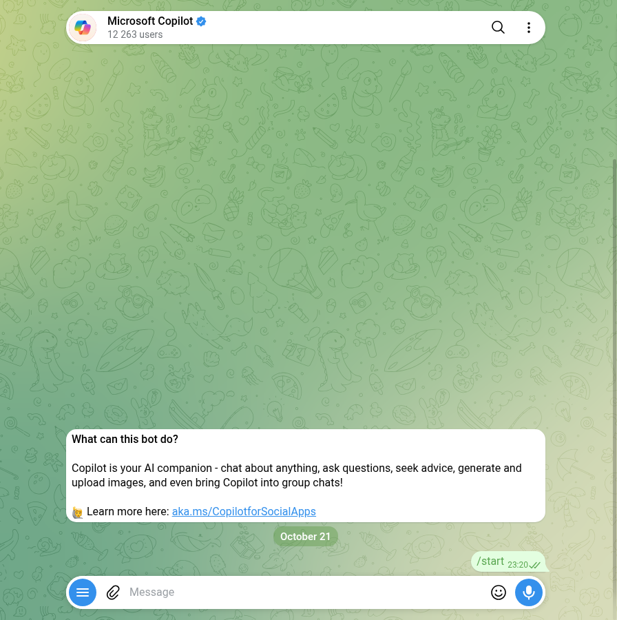

Telegram AI Bots: I Tested 91, the Only Verified One Is Off
Search Telegram for “ChatGPT” or “AI bot” and you get a wall of bots named after models: ChatGPT 6, Claude 5, Gemini, DeepSeek, Nano Banana. I took every bot that Telegram’s own search returned for 28 AI searches, 91 of them, and sent each the same messages over three nights in October 2026.
Three things came out of it that no “best AI bots” list will tell you:
- The only big-tech AI bot with Telegram’s verified badge is switched off. Microsoft Copilot still sits in search with the blue tick, and Microsoft’s own blog says Copilot left Telegram in January.
- The biggest “free ChatGPT” bot let me ask one question. On the second it asked me to subscribe to a channel first. Four more of the big ones put up a wall after two, three or four answers.
- Six of the seventeen bots that could add up gave me the wrong date, two of them by three years. A bot with no clock says whatever date its model was trained on.

/start sent the night before, and nothing back.How I tested
- Corpus. 28 searches in Telegram’s search box, the same box you type into: ai bot, chatgpt, chat gpt, gpt, gemini, claude, deepseek, grok, perplexity, copilot, nano banana, chatgpt free, ai image generator and more, plus the Russian нейросеть and ии бот and the Ukrainian нейромережа and штучний інтелект. 112 bots came back. 21 of them only appeared because my test account had opened them for earlier posts, so a new user wouldn’t see them, and I dropped those before sending anything. That left 91.
/startto all 91, reply read after ten seconds and again a few minutes later.- One question with a checkable answer to every bot that answered without a hard gate (55 bots, plus 4 more the next night after tapping their chat button): “What is 17 times 23? Then tell me today’s date.” The answer is 391, and the date was 21 October 2026.
- Free messages before a wall. The next night, the sixteen that got 391 right each got up to ten short sums (“What is 61+52?”, new numbers every time), one per bot in rotation, at least twenty seconds apart. I stopped a bot at the first reply that asked for a subscription, a payment or a channel instead of answering.
- Monthly users are the number Telegram shows on a bot’s profile, all read on 22 October 2026. They move by the day, so treat them as size, not as a ranking.
- Nothing paid, no channel joined, no referral link used, no phone number shared, and no “I agree” pressed on a service’s terms (more on that below).
The verified one has been switched off since January
Telegram marks some accounts with a blue verified badge. Out of 91 AI bots in search, four carry it: @CopilotOfficialBot (Microsoft Copilot), @GrokAI, a token-farming app and an airline’s help desk. None of the bots named after ChatGPT, Gemini, Claude or DeepSeek has the badge.
Copilot’s profile still says it is “your AI companion – chat about anything”. I sent /start on 21 October at 23:20. On 25 October, four days later, the chat still showed my /start and nothing else. The reason is on Microsoft’s own blog: in “Copilot is leaving WhatsApp and other messaging apps” (24 November 2025) the Copilot team wrote that “Copilot access across other third-party messaging apps will end on January 15, 2026”, and the FAQ on that page names Telegram. Nine months later the bot is still in search, still verified, still showing 12,263 monthly users, and it doesn’t answer.
@GrokAI was silent too: at ten seconds, minutes later and four days later. Telegram and xAI announced a deal in 2025, but I couldn’t find an xAI page that names this bot. So all I can say is that Telegram verified it and it didn’t answer me.
What the model names in bot names actually are
Almost every big AI bot puts model names in its display name, because that’s what people search for. I checked the ones I saw against the makers’ own model pages on 22 October 2026:
| Name in a bot | What the maker’s page says |
|---|---|
| “GPT-6 Luna” | Real and current. OpenAI’s changelog: “Released GPT-6 Sol (gpt-6-sol) and GPT-6 Luna (gpt-6-luna)”, 22 September 2026 |
| “GPT-5.6 Luna”, “GPT-5.4 Mini” | Real, but older: released July and March 2026 |
| “ChatGPT 6” | No model by that name. OpenAI’s model list has GPT-6 Astra, GPT-6.1 Sol and GPT-6 Luna |
| “Claude 5” | No model by that name. Anthropic’s model list has Opus 5, Sonnet 5 and Fable 5 (legacy), and Haiku 5.5 among current ones |
| “Gemini 3.7 Flash” | Deprecated. Google’s page: requests to it “are automatically routed to gemini-3.8-flash”. One bot still labels every answer “[Gemini 3.7 Flash]” |
| “Nano Banana 2.1” | Real, Google’s image model. There is no “Nano Banana 2.5” |
A real model name in a bot’s title tells you what the bot wants to be found for. It doesn’t tell you which model answers. A few bots print a model under every answer (“↳ Done • OpenAI • GPT-5.6 Luna”, “[Gemini 3.7 Flash]”), and I can’t check those from the outside either.
One question: 17 times 23, and today’s date
Of the 91, 28 never answered /start, not at ten seconds and not minutes later. Two turned out to be mailing lists that subscribed me on the spot (/off worked). 55 got the question. 16 answered 391. The rest answered with a wall, a menu, a request for a photo, or nothing.
The date is the more interesting half. A language model doesn’t know what day it is unless the bot tells it, so a bot that skips that step answers with the date its model was trained around:
| Date given on 21 October 2026 | Bots |
|---|---|
| 21 October 2026 (right) | 9: @GPT4Telegrambot, @GPT4Tbot, @gpt3_unlim_chatbot, @GPT4AgentsBot, @GPT5TGBot, @trendyai_bot, @deepseek_gidbot, @P24_CoPilot_bot, @aethergeminibot |
| 14 October 2026 | @RussiaChatGPTBot, a week behind |
| 5 December 2025 | @chatgpt5open_bot (“CHAT GPT 5 FREE”) |
| 22 May 2025 | @ChatGPT_Gemini_DeepSeek_Bot (375,619 monthly users) |
| 21 May 2024 | @MP3PilotBot, which is a music search bot |
| 30 October 2023 | @SuperNeuroAi_bot (“НейроБот | GPT-5”) |
| 3 October 2023 | @gpt4_ru_bot (“GPT-5 Bot (free)”, “running on the advanced GPT-5 model”) |
| No date | @GPT4onlineTelegrambot (“My training data only goes up to 2026”), @capcut_free_bot (“For today’s date and more, Full version: /pay”) |
Why it matters: ask one of the wrong-date bots for “the latest” anything, a phone, a law, a price, and it answers from its own calendar without telling you which one. A bot named “GPT-5” that thinks it’s October 2023 is worth knowing about before you ask it something that changes.
How many free messages before a wall
The next night I kept sending the sixteen bots simple sums until each one stopped answering. Telegram cut that short for me: after about a hundred messages in twelve minutes it told my account to wait 194 seconds before sending more. So “no wall” below means no wall in the first five to seven messages, not “unlimited”.
| Bot | Answered before the wall | What the wall said |
|---|---|---|
| @GPT4Telegrambot (4,721,547 monthly users) | 1 | “To continue using the bot for free, please subscribe to channels”, for “50 free requests every week”, or /premium |
| @GPT4Tbot (388,242) | 2 | The same text, word for word, and the same channel |
| @P24_CoPilot_bot | 3 | “You have reached your daily limit of free requests”, with a button “Buy 100 messages (50 Stars)” |
| @ChatGPT_Gemini_DeepSeek_Bot (375,619) | 4 | In Russian: requests have run out, subscribe, “3 days for 1 rouble” |
| @GPT4AgentsBot (314,726) | 4 | “To keep using the bot for free, please subscribe to the channel”, or premium for “up to 500 daily requests” |
| @gpt3_unlim_chatbot (2,364,198) | 5 of 6 | None yet. Every answer shows what it cost, about 0.0025 roubles, so this is a balance being spent |
| @deepseek_gidbot, @GPT5TGBot, @GPT4onlineTelegrambot, @chatgpt5open_bot, @aethergeminibot, @RussiaChatGPTBot, @SuperNeuroAi_bot | All of them, 6–7 | None yet. @aethergeminibot runs on a trial that ends 24 October; @RussiaChatGPTBot says you get 15 free requests a day; one @SuperNeuroAi_bot answer arrived cut off right before the number |
| @capcut_free_bot | 6 of 6 | None, but every answer ends with “Full version: /pay” |
@trendyai_bot answered the first two and then sent a “Customize your chat” offer to pick a smarter model. That isn’t a refusal, but my script stopped there, so I have no count for it.
The biggest bots share a pattern: a few answers are free, and the price of the next ones is joining a channel. Three of the five walls asked for a channel subscription before money. With millions of users, a bot can offer its subscribers to channels, and the channel is what you pay with.
Free also comes with mail. @RussiaChatGPTBot sent me four messages on 22 October before I had written anything that day: a welcome, “Don’t know where to start?”, “Your 15 requests are still waiting” and “And you have nothing to ask?”. @trendyai_bot sent a price offer after midnight and a referral offer forty minutes later.
The walls that came before the first answer
- Subscribe to a channel first (4 bots): no answer at all until you join.
- Accept the service’s rules (5 bots). Three share one text, “By registering, you accept the Rules of the service”, and a ✅ Agree button. I read the rules before pressing anything. For @GPTBananoBot and @GPTFluxBot they are Google Docs that name a Russian company as the operator and include consent to personal-data processing and to advertising mailings. @ai_official_robot, the one with “official” in its username and “ChatGPT 5” as its name, links its rules to a page that returns 404. @BANANAGENBOT (1,103,511 monthly users) says it outright: pressing “Agree” is your consent to advertising and information mailings, and the welcome bonus is credited right after you press it. @pauk_ai_bot wants you to accept an offer, a privacy policy and consent to personal-data processing. I didn’t press Agree on any of them.
- Send a photo first (several image bots): they answer text with “upload your photo”.
- A person, not a bot. One “Claude” bot turned out to be a support desk for a Russian-language video course, answering 9 to 22 Moscow time.
Four more answered the question with a menu, so the next night I tapped the chat option they offered and asked again. @gpt4_ru_bot, which calls itself “GPT-5 Bot (free)” and promises 50 free requests a day, answered 391 and said it was 3 October 2023. The other three, @ceceisarobot (2,635,808 monthly users), @midyearnbot and @resignxrobot, sent the same reply word for word: “ChatGPT · GPT-6.1 Sol, 5 ₽ per message”, then “not enough funds: you need 5 ₽, your balance is 0 ₽”. Zero free messages: on those three, ChatGPT is paid from the first question.
What I could not test
- Answer quality. A sum and a date are a liveness check, not a review. I didn’t compare essays, code or images.
- Which model is really behind a bot. I can read the name a bot gives, not what its server calls.
- Daily limits past seven messages. Telegram’s own flood limit stopped my account first. Limits also reset at midnight, so I counted within one evening only.
- Anything paid or behind a channel. I didn’t subscribe, pay or accept anyone’s terms, so what comes after each wall is the bot’s description, not my test.
If you want an AI bot in Telegram tonight
- Don’t trust the name. “Official” in a username and a model name in the title cost nothing. Of the bots I tested, the only verified big-tech one is switched off.
- Ask it today’s date first. A wrong date means anything time-sensitive comes from the model’s training calendar.
- Count to three. If a channel subscription appears by the second or third message, that’s the business model.
- Read the first screen before pressing Agree. You may be consenting to advertising mail from a company you’ve never heard of.
- Remember where your messages go. Everything you type into one of these bots goes to whoever runs its server, not to OpenAI, Google or Anthropic directly. Don’t paste passwords, documents or anything about other people.
Game night that needs no bot at all
If what you wanted from an AI bot was questions for a group chat, the Telegram Party Pack is plain text you paste in: 110 Truth or Dare, 45 Never Have I Ever, 30 Would You Rather, 30 Most Likely To, 25 Paranoia and 15 Story Chain prompts, with ready-made poll blocks and a host guide. No channel to join, no balance to top up, nothing reading your chat.
Get the pack — $9.99Frequently asked questions
Is there an official ChatGPT bot on Telegram?
None of the bots named after ChatGPT, Gemini, Claude or DeepSeek that Telegram’s search returned on 20–21 October 2026 had the verified badge. The only verified big-tech AI bot, Microsoft Copilot, still appears in search but didn’t answer: Microsoft ended Copilot on third-party messaging apps on 15 January 2026. A username with “official” in it proves nothing.
Are ChatGPT bots on Telegram free?
For a few messages. In this test the biggest one asked for a channel subscription after one answer, four others put up a channel, payment or daily-limit wall after two to four answers, and three bots charged 5 roubles from the very first message. Eight answered six or seven questions without a wall, though one ends every answer with “Full version: /pay” and one runs on a trial that ends 24 October.
Why does a Telegram AI bot give the wrong date?
A language model doesn’t know today’s date unless the bot passes it in. Six of seventeen bots that answered a simple sum also gave a wrong date, from a week off to three years off. Ask a bot the date before you trust it with anything that changes, like prices, news or laws.
Is it safe to use an AI bot in Telegram?
Everything you type goes to whoever runs the bot, not straight to OpenAI, Google or Anthropic. Some bots ask you to accept terms that include consent to advertising mailings before the first answer. Don’t send passwords, documents or other people’s details to a bot you can’t identify.